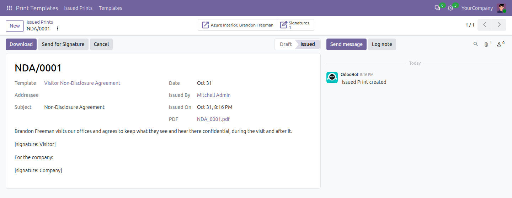
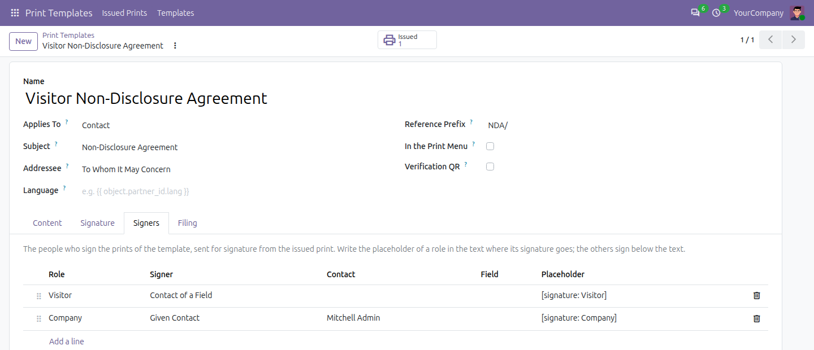
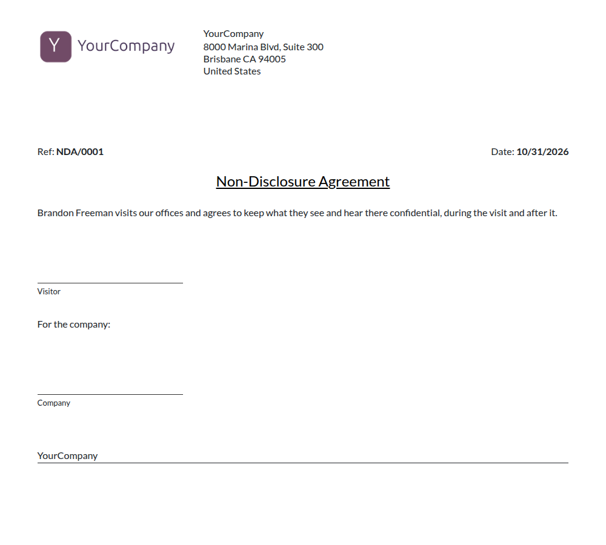

Send the issued prints of Print Templates for electronic signature with Sign: each print template names who signs its prints, in their order, and placeholders put each signature where it belongs in the text.
A bridge: it installs by itself once Sign and Print Templates are both installed.

Send for Signature on the issued print: the request opens with its signers, to check before sending it.
Everything Sign does, for the certificates and letters of Print Templates.
The Signers tab of a print template lists who signs, with the placeholder of each role, whether an email code is needed, the days to sign and the days between reminders.

The placeholders of the text become signature blocks, blank until each signer signs.

Sign: Print Templates depends on Sign (om_sign) and Print Templates (om_print_template), and installs by itself once both are installed. Sign, Configuration, Print Templates opens the print templates, for the managers of Print Templates.